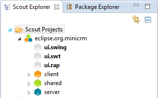

| New Eclipse Scout Project |
|---|
 | |  |
| Mini CRM Scout application | | Get example database |
We need to create a new Scout Project and switch to the Scout Perspective. When we're done we can run the server, verify that it is running using a web browser, and we can run the client using either the Swing or the SWT user interface.
The client will not yet contain anything, but this will demonstrate that our infrastructure is working.
Once you're done, continue on to setup a SQL service.
New Workspace
Make sure you start with a new workspace. An Eclipse Scout project usually consists of multiple plugin projects and it may be convenient to have separate workspaces for each Scout project. This is not strictly necessary, however, as the Scout SDK easily manages multiple Scout projects within the same workspace.
Create a new Eclipse Scout project
If you haven't done so yet, change to the Scout Perspective.
Right-click on the folder Scout Projects and choose New Scout Project in order to create a new Eclipse Scout project.
Use eclipse.org.minicrm as the project name in the first step, click next.
In the second step, choose the outline tree with table form application template. Confirm with Finish.
Project Name, Project Alias
The project name will be used for all the plugins created. They'll get names like eclipse.org.minicrm.client and eclipse.org.minicrm.server. The project alias will be used for the servlet running on the server. Once you started the server you'll be able to contact it at http://localhost:8080/minicrm. Thus, the alias will be visible to the outside world.
RAP TargetWe directly pressed Finish after the second step in the project creation wizard. By doing so we accepted the default values of the third step for the RAP target creation. To learn more about the project- and RAP target creation please see the
Create a new Project HowTo
After the project has been created the Scout Explorer is expanded and contains nodes for client, shared and server as well as nodes for the 3 user interfaces, ui.swing, ui.swt and ui.rap.

Start the Server
Click on the server node. This will show two products, a production product and a development product. Click the green arrow of the development product to start it.
Two Products
The two products allow you to specify two different config files. This allows you to set different system properties determining which databases to connect to, which log levels to use, etc.
Test the Server
To test if the server is running properly, go to http://localhost:8080/minicrm/process.
You should see a page providing information about the server.
Start the Client
Click on either the ui.swing, ui.swt or ui.rap node and start the development client product by clicking on the green arrow.
When starting the Swing or SWT user interface, you should directly see an empty client application (the following screenshot shows the SWT client. Depending on the UI you are starting it could look different in your case):
When starting the RAP user interface, no desktop application is started. Instead another server is running (by default on port 8082). To access the RAP UI please open a browser of your choice and navigate to the following URL: http://localhost:8082/web.
A Different Language
If you want to run the client in a different language than your system's default, you might have to fiddle with the configuration. From the Run menu, choose Debug Configurations... and switch to the Arguments tab. There, replace -nl ${target.nl} with -nl en_US. Click the Apply button and the Debug button. Eclipse will remember this setting as long as you keep reusing the Run and Debug menus (using the two green buttons in the tool bar to run products). If you use the Scout Object Properties tab, this language setting will revert to the default.
Troubleshooting
- Port 8080 has to be free for this to work. It is also possible to use another port, to do so you have to change the line org.eclipse.equinox.http.jetty.http.port=8080 in the config.ini of the server product and the server.url= in each client interface (rap, swt ,swing).
- If you try to start the Swing Client in Mac OS X, this might fail. To fix this go to the run configuration (Run -> Run Configurations...) and select the Swing Client in the tree on the left hand side. In the 'Arguments' tab change the following:
- remove -ws ${target.ws} from the program arguments.
- add --launcher.secondThread to the program arguments (if not already present).
- remove -Dorg.eclipse.swt.internal.carbon.smallFonts from the VM arguments.
- remove -XstartOnFirstThread from the VM arguments.
For Mac OS X it is recommended to use the 32 bit Eclipse packages when working with the Swing Client.
Please note: When the application is started from the .product file again (using the Launch links), this might undo the changes done to the launch configuration in the steps above!
|  | |
| Mini CRM Scout application | | Get example database |